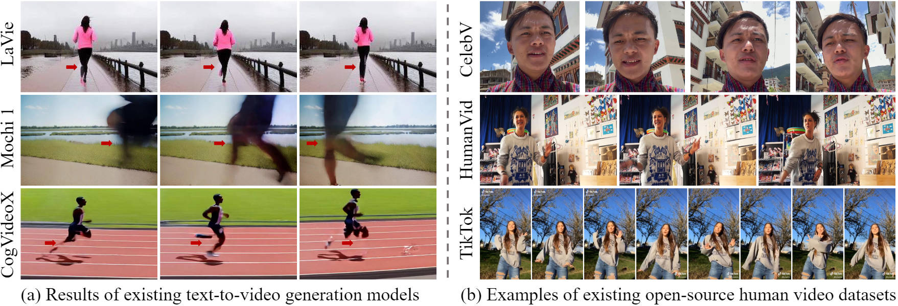
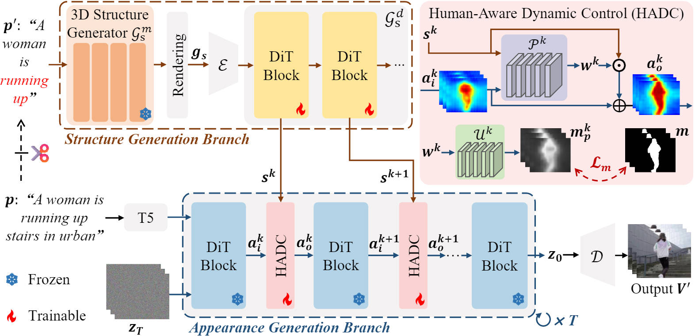

1Peking University2Li Auto3Harbin Institute of Technology

Motivation of this work. Existing text-to-video generation models often struggle to generate human videos
with reasonable structures, such as the results corresponding to the motion prompt "running" in (a). Moreover, as shown
in (b), most existing human video datasets focus on facial or upper-body regions, or consist of vertically
oriented dance videos, models trained on such datasets often struggle to generate realistic whole-body and long-range
movement.
Generating human videos with consistent motion from text prompts remains a significant challenge, particularly for
whole-body or long-range motion. Existing video generation models prioritize appearance fidelity, resulting in unrealistic or physically implausible human movements with poor structural coherence. Additionally, most existing human video datasets primarily focus on facial or upper-body motions, or consist of vertically oriented dance videos, limiting the scope of corresponding generation methods to simple movements. To overcome these challenges, we propose MoCo, which decouples the process of human video generation into two
components: structure generation and appearance generation. Specifically, our method first employs an efficient 3D structure generator to produce a human motion sequence from a text prompt. The remaining video appearance is then synthesized under the guidance of the generated structural sequence. To improve fine-grained control over sparse human structures, we introduce Human-Aware Dynamic Control modules and integrate dense tracking constraints during training. Furthermore, recognizing the limitations of existing datasets, we construct a large-scale whole-body human video dataset featuring complex and diverse motions. Extensive experiments demonstrate that MoCo outperforms existing approaches in generating realistic and structurally coherent human videos.
Method
Overview of the proposed MoCo. Given a text prompt, we first employ a 3D structure generator to produce a structure
sequence, which is subsequently encoded as structural features to guide the appearance generation process. To further
enhance motion consistency, we introduce human-aware dynamic control modules and incorporate a dense tracking loss
during training.

Comparison with Existing Text-to-Video Generation Models
We show visual comparison with ModelScope, VideoCrafter2, Lavie, Mochi 1 and CogVideoX-5B, and we will provide more comparison with Hunyuan and Wan2.1 later.
Comparison with Text-Driven Human Video Generation Models
Since existing text-driven human video generation methods (Move-in-2D and HumanDreamer) are not yet open source, we perform a visual comparison based on their released videos, if accessible.
More Generated Videos of Our MoCo
We show here more generation results of MoCo, a total of 14 videos.